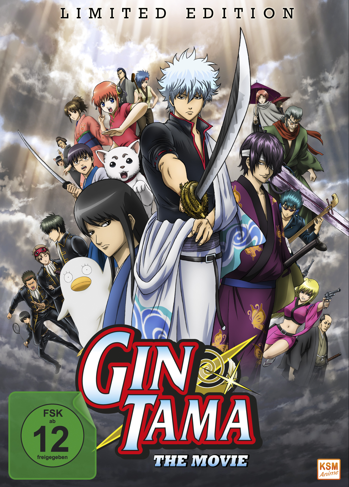

One Punch Man.
One Punch Man is a wildly popular action-comedy anime based on the webcomic and manga created by ONE and illustrated by Yusuke Murata. It is known for its brilliant parody of superhero and shonen tropes, blending epic battles with hilarious humor. The anime first aired in 2015 and has since become a fan-favorite worldwide.

Gintama
Gintama is a legendary anime and manga series created by Hideaki Sorachi. First airing in 2006, it blends comedy, action, drama, and a touch of science fiction in a way that few other series can replicate. With its unique sense of humor, heartfelt moments, and a massive cast of memorable characters, Gintama has earned a special place in the hearts of anime fans.